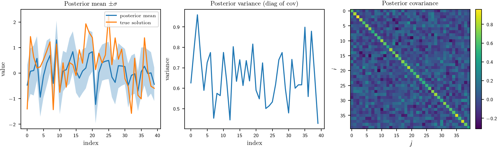

# Problem
N = 40
key = jax.random.PRNGKey(0)
key1, key2 = jax.random.split(key, 2)
A = jax.random.normal(key1, (N,N)) # matrix A
v_true = jax.random.normal(key2, (N,))
b = A @ v_trueBayesian Linear Solver
A Bayesian linear solver interprets the problem of solving a linear system as a probabilistic inference task:
\[ A x = y, \quad A \in \mathbb{R}^{m \times D}, \quad x \in \mathbb{R}^D. \]
Given a set of candidate search directions \[ S \in \mathbb{R}^{n \times D}, \] we obtain linear observations of the form \[ W x = \underbrace{S^\top y}_{\text{observed}}, \quad W = S^\top A. \]
There are two natural approaches in GaussED:
IndexDomainGP: Define a Gaussian process over the discrete domain
\[ \mathcal{X} = \{0, \ldots, D-1\}, \] so that
\[ \begin{pmatrix} f(0) \\ f(1) \\ \vdots \\ f(D-1) \end{pmatrix} = \begin{pmatrix} x_1 \\ x_2 \\ \vdots \\ x_D \end{pmatrix}. \] This is just a multivariate normal prior over the solution vector. The search direction observations are then linear functionals of this GP.Vector-valued GP: Alternatively, treat \(x\) directly as the mean of a vector-valued GP, with covariance modelling correlations between components.
Let’s generate a random problem:
0.1 Via IndexDomain
index_domain = IndexDomain(N, jnp.float64)
# Pick k directions: k standard basis columns
k = 20
idxs = jnp.linspace(0, N-1, k).round().astype(jnp.int32)
S = jnp.eye(N)[:, idxs] # (N,k)
# Build W and y
W = (S.T @ A) # (k,N) == S^T A
y = (S.T @ b).reshape(k, 1) # (k,1)
# GP prior on IndexDomain with delta kernel (Σ0 = α I)
index_domain = IndexDomain(N, jnp.float64)
codomain = Codomain((1,))
mean = ZeroMeanFun(index_domain, codomain)
delta_kernel = DeltaKernel(DeltaParams(amplitude=jnp.array(1.)))
backend = ExactBackend(solverfns=solver_fns)
gp = GP(index_domain, codomain, mean, delta_kernel, backend)
gpmodel = GPModel(gp=gp, likelihood=GaussianLikelihood())
# Observations via WeightedEval over all indices X_all
X_all = jnp.arange(N, dtype=jnp.int32).reshape(N, 1)
obs_fnl = WeightedEval(W=W, X=X_all)
probe_obs = Probe(ops=(), fnl=obs_fnl)
post = gpmodel.condition(probe_obs, y) # posterior GP over v
# Evaluate posterior on all indices for plotting
probe_te = Probe(ops=(), fnl=Eval(X_all))
post_mean = post.mean(probe_te)
post_cov = post.covariance(probe_te)
0.2 Via a Vector-valued GP
TODO…